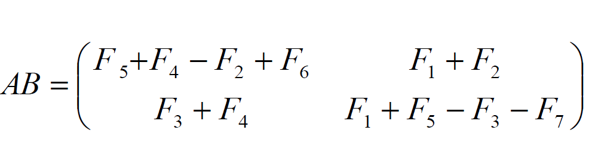
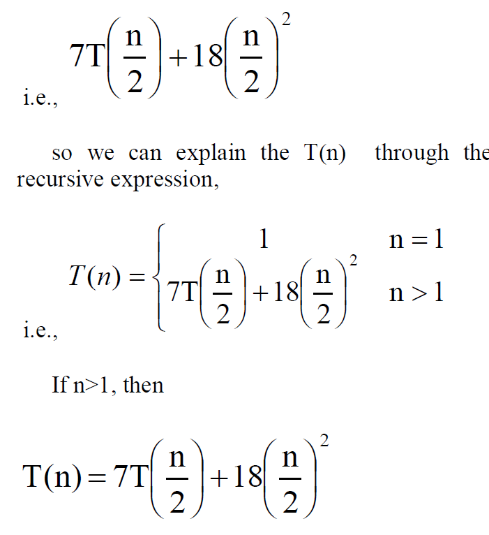
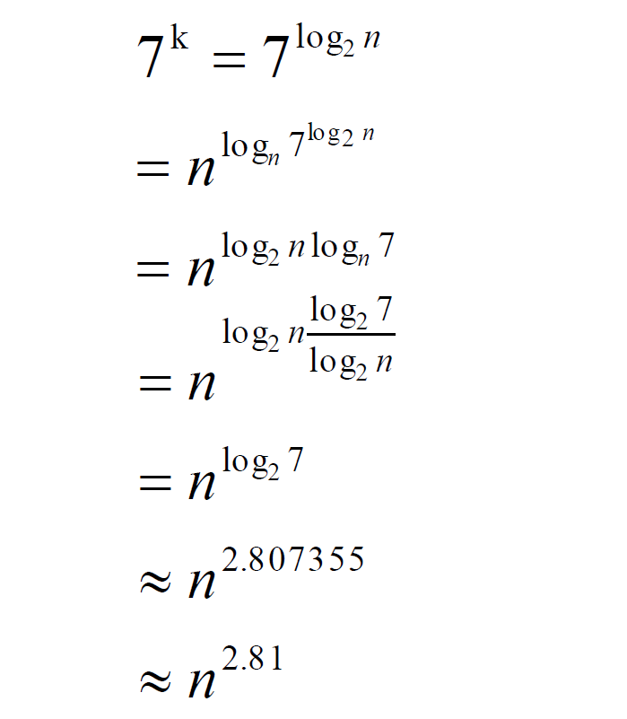
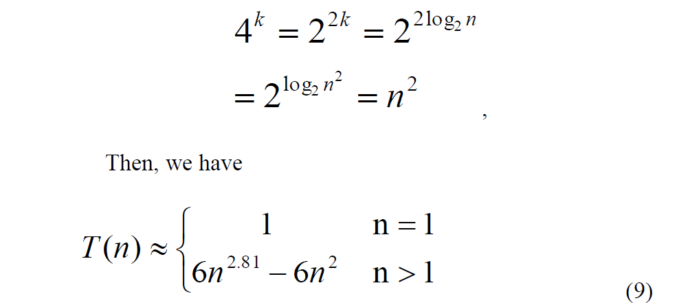

Divide and conquer is a problem-solving method where you break a big problem into smaller ones, solve them, and then combine the solutions. It's efficient because it simplifies complex tasks by breaking them down into manageable chunks. In the context of matrix multiplication:
Strassen's algorithm is a specialized application of the divide and conquer approach, specifically tailored for optimizing matrix multiplication tasks.
Thus,
The Strassen algorithm reduces the number of basic multiplications needed for multiplying two n/2 x n/2 matrices to 7, compared to the standard algorithm, while also requiring 18 matrix additions or subtractions. Since n is a power of 2, it can be represented as 2^k, where k is a non-negative integer. If k equals 0, indicating that n is 1, the time complexity of matrix multiplication is constant, denoted by 1. For k greater than 0, the time complexity of matrix multiplication can be expressed recursively using Master Theorem, as shown.
7T(n/2): represents the time complexity of recursively multiplying the submatrices. Since Strassen's algorithm splits each matrix into seven submatrices, there are seven recursive calls to multiply these submatrices.
18(n/2)^2: represents the time complexity of the additional operations involved in combining the results of the subproblems. This includes additions and subtractions of matrices, which are constant time operations but involve (n/2)^2 elements.
Now consider n=2^k (as n is in powers of 2), the equation becomes:
Since,
and,
The time complexity of Strassen's algorithm can be expressed as O(n^2.81), demonstrating its efficiency compared to the general matrix multiplication algorithm. To accommodate matrices with dimensions that are not powers of 2, they can be embedded into larger matrices (e.g., matrix E) with dimensions that are powers of 2. Despite potential dimension adjustments, the time complexity of Strassen's algorithm remains O(n^2.81).
A Summarisation:
| Feature | Description |
|---|---|
| Algorithm Type | Strassen's algorithm is a Divide-and-Conquer approach to matrix multiplication, breaking down the matrices into smaller submatrices for computation. |
| Basic Operation Count | Strassen's algorithm reduces the number of required multiplications from 8 to 7 for two n/2 × n/2 matrices, leading to a theoretical complexity of O(n^log2(7)), approximately O(n^2.807). |
| Complexity | The algorithm's time complexity is advantageous for large matrices due to reduced multiplication operations. However, it may not offer significant improvements for small matrices due to increased overhead. |
| Advantages | - Significantly reduces the number of basic multiplication operations, leading to faster matrix multiplication. - Particularly effective for large matrices, where the savings in multiplication operations become more pronounced. - Can outperform traditional cubic algorithms for sufficiently large matrix sizes, making it highly suitable for computational tasks requiring extensive matrix computations. |
| Disadvantages | - Increased overhead due to additional recursive calls and matrix additions/subtractions, making it less efficient for small matrices. - Requires extra memory for temporary matrices, potentially increasing space complexity. - May not provide significant performance improvements for small matrices due to overhead, making it less suitable for scenarios involving numerous small matrix computations. - Most suitable for square matrices of order in the powers of 2, limiting its applicability to matrices with sizes that fit this criterion. |
| Applications | - Widely used in numerical simulations requiring large-scale matrix operations, such as physics simulations and engineering analyses. - Commonly employed in image processing tasks, including convolution, filtering, and pattern recognition, due to its computational efficiency. - Vital in scientific computing applications, including solving systems of linear equations, finite element analysis, and computational fluid dynamics, where large matrix computations are prevalent. - Relevant in cryptography, particularly in algorithms like RSA, where large matrix multiplications are essential for encryption and decryption processes. |